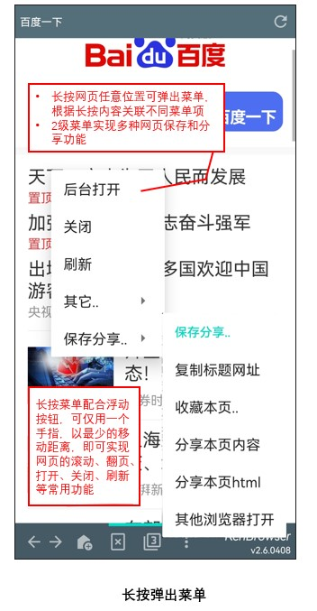

KenBrowser发布主页
0. 最新版本下载：
点击链接下载apk：KenBrowser_release_v3.0.0811.2.apk
1. 应用描述：
如果你跟我一样有以下痛点，请试试KenBrowser吧！
- 市面常见的手机浏览器功能越来越臃肿，广告越来越多，操作不够方便
- 手机上无奈装满了各种各样的app，因为很多网站都做自己的app而对移动端浏览器不友好
- 希望回复到当年一个简单便捷的手机浏览器，就能访问各种互联网资讯的日子
功能特点：
- 界面简洁，操作简单，程序小巧
- 支持网页自动滚动，可调速，看小说或图片多的网页特别爽
- 追求最大的操控便捷性。用一个手指头，以最少的点击操作，最短的手指移动距离，就能实现网页浏览的常用功能
- 支持油猴脚本（开放的javascript）注入，解除各大网站的网页浏览限制
2. 主要功能：
- 界面简洁。软件就一个主界面，界面元素如下图示。尽量利用各个按钮的短按和长按复用按钮，精简界面元素。

- 浮动按钮。利用浮动按钮，可以让用户只用1个手指，并且手指移动最少的距离，就能实现日常的网页浏览操作。
如下图示，可以实现网页的上下左右翻页，网页调速自动滚动（手指不用动就看长网页）。长按可拖动改变按钮位置（你手指在哪，按钮就放哪）

- 弹出菜单。在网页任意位置长按可触发弹出菜单，根据按下的内容呈现不同的关联菜单选项。弹出菜单加上浮动按钮，就完全实现手机浏览器的单手操作，用一个拇指就能顺畅浏览网页了！

- 自定义JS注入。很多网站都对移动端浏览器做了各种限制。KenBrowser支持自定义的javascript注入，让你可以解除各种限制；
特别是支持开放的油猴脚本，有海量的脚本资源，为浏览网页带来无限的功能扩展。
可以点击主界面更多按钮进入系统菜单，选择“设置-注入JS管理-导入JS”，选择合乎油猴脚本命名规范的js文件，完成导入；
也可以在文件管理器找到js文件，然后分享到KenBrowser。
3. 其它功能：
用其它浏览器打开网页
KenBrowser专注于简单便捷的网页浏览功能，有一些不常用的功能还没有实现，比如文档下载管理等。
但用户仍然不会损失使用感受，用户可以在网页长按调出长按菜单，选择“保存分享-其它浏览器打开”，即可在其它浏览器打开当前网页，使用其它的复杂功能，无缝切换。
设置网页字体缩放比例
在网页空白为止双击，或长按网页调出长按菜单，选择“其它-文字比例”，即可进入网页的文字缩放比例设置界面。
快速搜索关键字
在其它任何app，高亮选择关键字文本，选择分享到KenBrowser，则在KenBrowser直接打开搜索页面显示关键字的搜索结果。
快速打开粘贴板网址
在任何app复制网址到粘贴板后，切换到KenBrowser并点击顶栏，则自动提示是否打开网址。
4. 版本历史：
版本历史：
5. 公众号链接（评论区，待开发功能投票）
{kind=link}